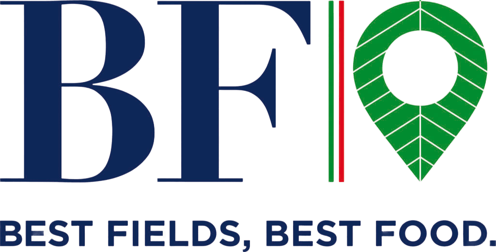
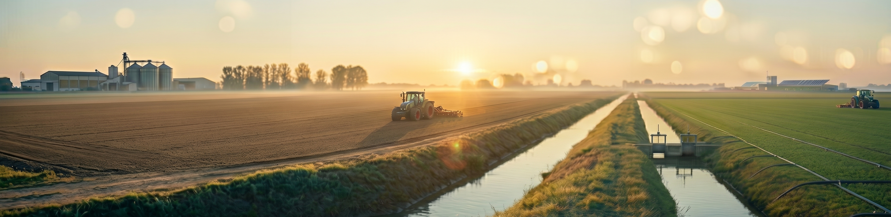
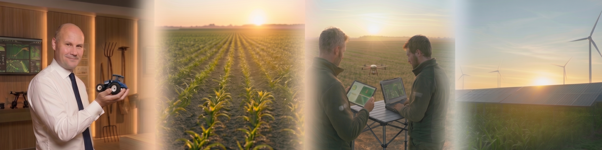

🌱 Scopri il nostro impegno per un'agricoltura sostenibile e innovativa. 🌱

Siamo la più grande azienda agricola italiana per Superficie Agricola Utilizzata e ci
impegniamo a promuovere pratiche agricole sostenibili che rispettino l'ambiente e
garantiscano un futuro migliore per le prossime generazioni.
Il nostro Piano Strategico di Sostenibilità 2023-2027 si focalizza su cinque priorità: sostenibilità ambientale, tutela della biodiversità, tracciabilità di filiera,
valorizzazione del capitale umano e collaborazione con le comunità locali.
Lo stato di avanzamento dei progetti sostenibili viene monitorato costantemente.
La nostra competitività si fonda sull'eccellenza qualitativa in ogni fase della filiera,
garantendo prodotti sicuri, di valore e totalmente tracciabili.
Questo percorso è guidato da un'innovazione sostenibile, dove l'implementazione di tecnologie all'avanguardia ci permette di ridurre
l'impatto ambientale e ottimizzare costantemente l'efficienza operativa.

"I temi di sostenibilità non sono per il Gruppo BF una visione ideale ma costituiscono la scelta consapevole di un approccio orientato alla creazione di valore che si riflette positivamente anche sui risultati economico-finanziari."
Federico Vecchioni, Amministratore Delegato di BF S.p.A.
Crediamo che ogni persona sia un elemento chiave del successo aziendale e ci impegniamo a promuovere un ambiente di lavoro sicuro, inclusivo e stimolante, in cui ogni individuo possa crescere professionalmente e contribuire al successo dell'azienda. Investiamo nella valorizzazione del capitale umano attraverso programmi di formazione continua e iniziative di sviluppo delle competenze, con l'obiettivo di creare un ambiente di lavoro positivo e motivante per tutti i nostri dipendenti.
100% dei terreni monitorati via satellite
Controllo tramite sensori IoT
Autoproduzione da impianti agri-voltaici
La Dichiarazione Non Finanziaria (DNF) 2023 illustra il nostro impegno verso un modello di business responsabile e trasparente. La pubblicazione di questo documento riflette la nostra convinzione che la responsabilità ambientale e la responsabilità sociale siano elementi fondamentali per il successo aziendale.